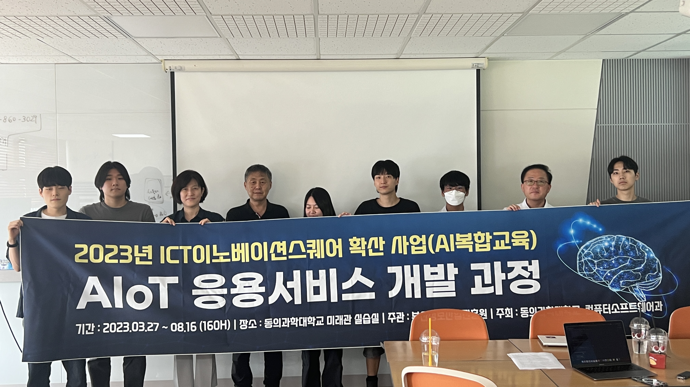
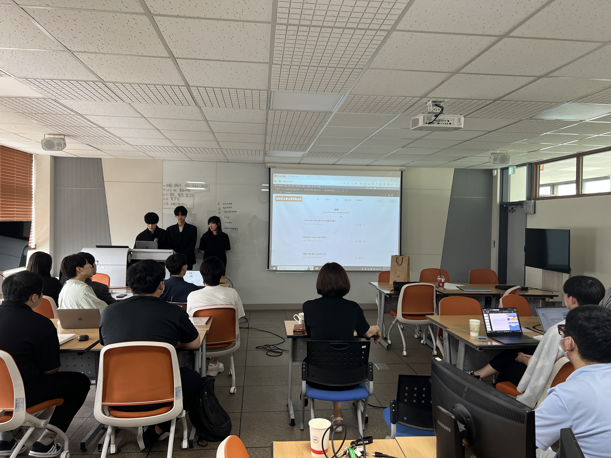
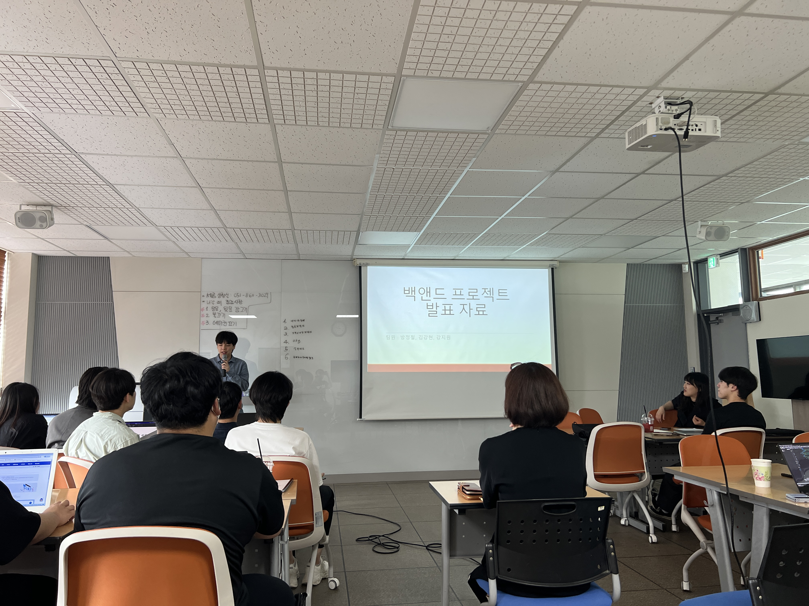
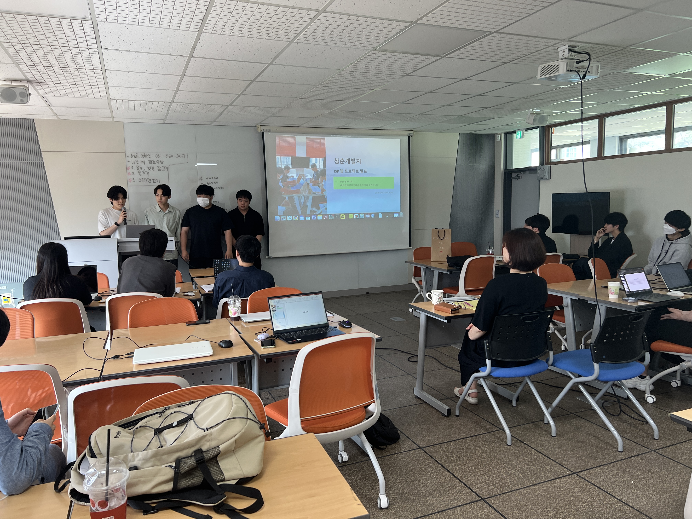
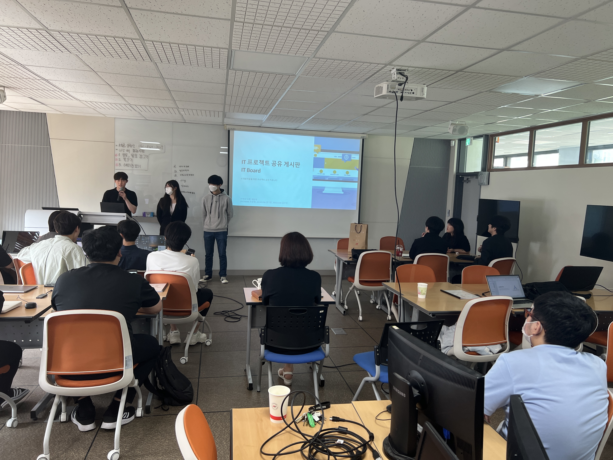

학과 소개


학과 역사
우리 컴퓨터소프트웨어과는 1983년 3월 모집정원 132명을 시작으로 하여 오늘에 이르고 있습니다. 30여년이 넘는 시간동안 수 많은 IT 분야의 인재들을 길러냈습니다. 급격하는 IT 관련 사회 변화에 적극적으로 대응하여 첨단 기술을 선도적으로 교과과정에 도입함으로써 현장 실무에 투입되어도 손색이 없는 인재를 배출해왔다고 자부하며, 우리 학과를 졸업한 동문들은 기업의 임직원, 교수, 연구소 연구원, 교사, 사업가 등 다양한 분야에서 각자의 역할을 다하고 있습니다. 2011년 9월부터 부산광역시와 부산정보산업진흥원이 부산지역 모바일 선업 활성화 프로그램의 일환으로 추진한 '모바일 앱 센터'가 컴퓨터소프트웨어과에 신설되었으며, 현재로는 부산시 AI서브센터라는 이름으로 변경되어 지역사회의 인공지능 기술을 보급하는데 앞장서고 있습니다.
교수 소개
| 직위/보직 | 이름 | 담당과목 | 연락처 | 이메일 | 학력 | 전공 | 재직기간 |
|---|---|---|---|---|---|---|---|
| 교수 | 허봉식 | C 프로그래밍, 웹개발기초Ⅱ | 051-860-3213 | psho@dit.ac.kr | 부산대(박사) | 컴퓨터공학 | |
| 교수 | 김진숙 | 데이터베이스, 웹개발기초 | 051-860-3214 | jinsook@dit.ac.kr | 연세대, 베를린공대, 부산대(박사) | 데이터베이스, 영상처리 | |
| 외래 교수 | 김주현 | 자료구조, 하이브리드앱 | isadora@naver.com | 계명대학교, 대학원(박사수료) | 지능형시스템 | ||
| 외래 교수 | 김경민 | 이산수학, 컴퓨터네트워크 | mpebble@naver.com | 인제대학교, 대학원(전산학박사) | 비주얼툴 | ||
| 명예 교수 | 전선배 | 동아대(박사) | 비주얼컴퓨팅 | 1981.3.1 ~ 2016.2.29 (35년) | |||
| 명예 교수 | 최석 | 부산대(박사) | 컴퓨터공학 | 1991.3.1 ~ 2020.8.31 (29년) | |||
| 명예 교수 | 백건효 | 부산대(박사) | 운영체제 | 1997.3.1 ~ 2022.8.31 (25년) | |||
| 명예 교수 | 김종현 | 부산대(박사) | 사물인터넷(IoT), 인공지능(AI) 서비스 개발 | 1991.3.1 ~ 2023.8.31 (32년) |
전공 동아리
대학의 학생활동 중 대표적인 것이 동아리 활동입니다. 동아리는 대학차원의 취미동아리와 학과의 전공동아리로 나누어져 활동하며, 학과 전공동아리는 같은 전공분야에 관심을 가지는 학생들이 모여 학습활동과 전공에 대한 심화학습을 하는 모임으로 계열의 작품 전시회 활동이나 고교생 공동 동아리 활동 등에 참여하고 있습니다.
AI 코딩클럽 컴퓨터 소프트웨어 분야는 기술발전이 급격히 이루어지는 분야인 만큼 2년간의 교육과정에서 이런 변화를 따라잡기가 어렵다. 따라서 외부활동보다는 학과 내에서 실시되는 다양한 프로젝트를 완벽히 수행하고 정보처리 산업기사 자격증을 취득하여 각자의 프로그래밍 능력을 높이는 방향으로 동아리 활동을 하고자 한다.
학과사랑_DIT
학과 영상
학과 소개앱
-
학교 마크 사진입니다.
-

▶ 일시 : 2023년 10월 11일 14시 ~ 14시 50분
▶ 장소 : 우리대학 미래관 603호 (계단식 강의실)
▶ 대상 : 동의과학대학교 컴퓨터소프트웨어과 재학생 (1, 2학년)
▶ 참가 기업 : (주)에스브이씨 (경남 양산시 소재)

지난 1일, 컴퓨터소프트웨어과의 6개 강의실 중 2개의 강의실을 프로젝트실로 구축되었다.
미래관 703호, 미래관 705호가 프로젝트실로 구축 되었으며, 그룹별 대형 TV를 제공하며, 각종 프로젝트를 진행할 수 있는 시설이 구비되었다.
미래관 703호는 책상, 의자가 교체되었으며 TV가 설치되었으며, 미래관 705호는 책상이 교체되었다.
학생들이 더 나은 환경에서 학업에 임할 수 있도록 학과 시설 (강의실)이 구축되었으며, 그룹별 프로젝트 진행시 용이할 수 있도록 하는 프로젝트실이 구축되었다.
프로젝트실은 학생들이 방과후에도 공부를 할 수 있도록 하며, 팀 프로젝트를 하는데 용이할 수 있도록 프로젝트실이 구축되었다.
가. 미래관 703호

금일 "2023 오픈캠퍼스데이" 행사를 실시하였는데요!
"2023 오픈캠퍼스데이" 행사는 수시 1차에 지원한 학생과 학과에 관심이 있는 학생들을 대상으로 학교 탐방 및 학과 체험과 입시 상담을 할 수 있는 행사입니다!
저희 컴퓨터소프트웨어과는 우리대학 산학관 1층에 위치한 DIT AI 카페에서 "2023 오픈캠퍼스데이" 행사를 진행하였는데요!
우리 학과에 방문한 학생들은 AI 작품 관람과 VR 체험 및 학과 교수님들께 학과 설명을 듣고, 입시 상담을 하여, 학과 체험도 해보며 학과에 대해 더 자세히 알게 되는 계기가 되었답니다!
내년에 동의과학대학교 컴퓨터소프트웨어과에서 꿈과 희망을 펼쳐보셨음 좋겠습니다!
동의과학대학교 컴퓨터소프트웨어과 입학상담 : 컴퓨터소프트웨어과 학과사무실 (051-860-3210)

지난 1일, 컴퓨터소프트웨어과의 6개 강의실 중 2개의 강의실을 프로젝트실로 구축되었다.
미래관 703호, 미래관 705호가 프로젝트실로 구축 되었으며, 그룹별 대형 TV를 제공하며, 각종 프로젝트를 진행할 수 있는 시설이 구비되었다.
미래관 703호는 책상, 의자가 교체되었으며 TV가 설치되었으며, 미래관 705호는 책상이 교체되었다.
학생들이 더 나은 환경에서 학업에 임할 수 있도록 학과 시설 (강의실)이 구축되었으며, 그룹별 프로젝트 진행시 용이할 수 있도록 하는 프로젝트실이 구축되었다.
프로젝트실은 학생들이 방과후에도 공부를 할 수 있도록 하며, 팀 프로젝트를 하는데 용이할 수 있도록 프로젝트실이 구축되었다.
나. 미래관 705호

지난 16일, 우리대학 미래관 703호에서 "(AI복합교육) AIoT 응용서비스 개발 과정"에 대한 수료식을 진행하였다.
이번 "(AI복합교육) AIoT 응용서비스 개발 과정"는 3월 27일 ~ 8월 16일까지 160시간동안 교육을 진행하였으며, 부산정보산업진흥원이 주관하고, 동의과학대학교 컴퓨터소프트웨어과 주관하였다.
이번 "(AI복합교육) AIoT 응용서비스 개발 과정"에서는 15명의 학생이 본 교육을 수료하였으며, 수료한 학생들은 본 교육에서 배운 내용들을 토대로 AI 프로젝트를 진행하여 오는 10월에 개최되는 캡스톤디자인 경진대회에 참가(출품)할 예정이다.
컴퓨터소프트웨어과 학과장(허봉식 교수)은 학기 중에도 교육을 진행하고 방학 중에도 교육을 진행하였는데 15명의 학생들이 포기하지 않고 수료하게 되었다라고 하며, 수료를 축하하고, 현재 진행하고 있는 AI 프로젝트에 대해 격려와 응원의 말을 전했다.
부산정보산업진흥원이 주관하는 AI 복합교육은 작년(2022년)에도 진행하였으며, 3개의 팀(Binary, 감자와할미, 졸지마AI)이 DIT 캡스톤디자인 경진대회에서 대상과 동상을 수상하였으며, Binary팀은 영남이공대학교에서 개최된 2022 디지텍 캡스톤디자인 경진대회에서 "Vision AI를 활용한 동아리실 출입 관리 시스템"이라는 작품으로 출품(참가)하여 동상을 수상하였다.
-

동의과학대학교 컴퓨터소프트웨어과는 2023년 AI 복합교육 최종 발표회를 미래관 705호에서 실시하였다.
최종 발표회는 작년과 동일하게 AI 복합교육에서 배운 내용을 토대로 작품을 개발하고, 교수님들과 서로 간의 피드백을 하는 자리이다.
동의과학대학교 컴퓨터소프트웨어과는 총 2개의 팀이 AI 복합교육 프로젝트와 캡스톤디자인경진대회 참여를 위한 프로젝트를 진행하고 있다.
동의과학대 컴퓨터소프트웨어과 학생들의 캡스톤디자인 경진대회 관련해서는 학과뉴스 - 캡스톤디자인경진대회 관련 소식을 확인하길 바란다.
 2023년 07월 11일, 우리대학에서 실시하는 청해진 대학에 참여하는 컴퓨터소프트웨어과 5명의 학생 포함 14명의 연수생들이
일본 후쿠오카로 무사히 출국하였다.
2023년 07월 11일, 우리대학에서 실시하는 청해진 대학에 참여하는 컴퓨터소프트웨어과 5명의 학생 포함 14명의 연수생들이
일본 후쿠오카로 무사히 출국하였다.
14명의 연수생들은 2023년 07월 11일 ~ 2023년 08월 09일까지 NARE International CO., Ltd. (일본 후쿠오카)에서 해외 연수를 진행할 예정이다.
- 
ㆍ일시 : 2023년 06월 22일 (목) 14:00 ~ 16:00
ㆍ장소 : 미래관 705호 (프로젝트실)
ㆍ주제 및 작품 사진 :
1. 네카라쿠배 - 김민지, 조담진, 서정호
- 
ㆍ일시 : 2023년 06월 22일 (목) 14:00 ~ 16:00
ㆍ장소 : 미래관 705호 (프로젝트실)
ㆍ주제 및 작품 사진 :
4. org - 방정철, 김강현, 강지원
- 
ㆍ일시 : 2023년 06월 22일 (목) 14:00 ~ 16:00
ㆍ장소 : 미래관 705호 (프로젝트실)
ㆍ주제 및 작품 사진 :
2. 청춘개발자 - 김신영, 김효민, 임승진, 전경민
- 
ㆍ일시 : 2023년 06월 22일 (목) 14:00 ~ 16:00
ㆍ장소 : 미래관 705호 (프로젝트실)
ㆍ주제 및 작품 사진 :
3. 기력이 다한 개발자 - 조상원, 김수린, 권기훈
{kind=link}
{kind=link}
{kind=link}
{kind=link}
{kind=link}